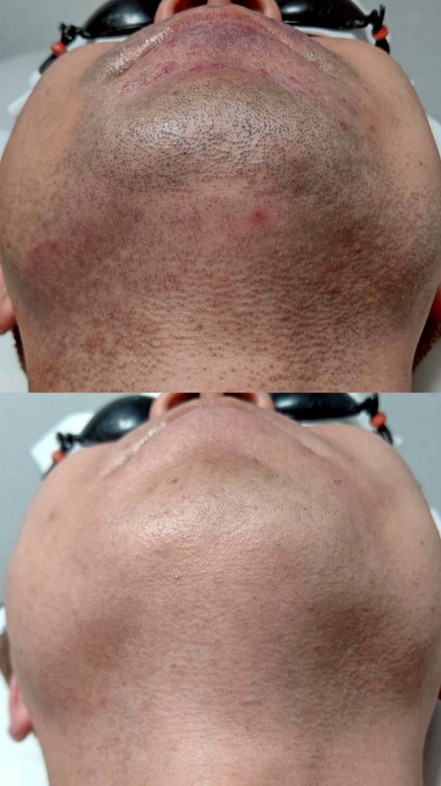

家庭用脱毛器とサロンでの光脱毛、何が違う?

「家庭用の脱毛器を使っているのですが、サロンに通うのとどう違うのですか」というご質問をいただくことがあります。今回はこの点について整理してお話しします。
家庭用脱毛器は手軽に自宅で使える一方、安全面への配慮から出力がサロンの機器に比べて抑えられていることが一般的です。そのため、毛質や部位によっては変化を感じるまでに時間がかかったり、ムラが出やすかったりすることがあります。
サロンでの光脱毛は、スタッフが肌の状態や毛質を確認しながら、その方に合わせて照射レベルを調整して進められる点が特徴です。Iryでは無料パッチテストで肌の反応を確認したうえで、無理のない範囲で照射レベルを見極めています。
「まずは家庭用で試してから」という方も多くいらっしゃいますが、自己処理では手が届きにくい背中などの部位は、サロンでの施術のほうが安定して進めやすい傾向があります。効果の出方には個人差がありますので、併用や切り替えを検討されている方も、まずは無料カウンセリングでご相談ください。